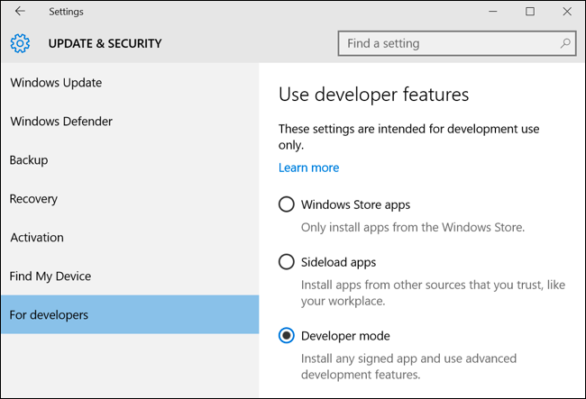

Chapter 1 Introduction
1.1 What is Shell/Terminal?
Shell is a text based application for viewing, handling & manipulating files. It takes in commands and passes them on to the operating system. It is also known as
- CLI (Command Line Interface)
- Bash (Bourne Again Shell)
- Terminal
It is sufficient to know a handful of commands to get started with the shell.
1.2 Launch Terminal
Although we will use the terminal in RStudio on RStudio Cloud, we should still know how to launch the terminal in different operating systems.
1.2.1 mac
Applications -> Utility -> Terminal

1.2.2 Windows
1.2.2.1 Option 1
Go to the Start Menu or screen and enter Command Prompt in the search field.

1.2.2.2 Option 2
Start Menu -> Windows System -> Command Prompt

1.2.2.3 Option 3
Hold the Windows key and press the R key to get a Run window. Type cmd in the box and click on the OK button.
1.2.3 Linux
- Applications -> Accessories -> Terminal
- Applications -> System -> Terminal

1.2.4 Windows Subsystem for Linux
If you want to use bash on Windows, try the Windows subsystem for Linux. It only works on 64 bit Windows 10. Below are the steps to enable Windows subsystem fro Linux:
1.2.4.1 Step 1 - Enable Developer Mode
To enable Developer Mode open the Settings app and head to Update & Security > For Developers. Press the Developer Mode switch.

1.2.4.2 Step 2 - Enable Windows Subsystem for Linux
To enable the Windows Subsystem for Linux (Beta), open the Control Panel, click Programs and Features, and click Turn Windows Features On or Off in left side bar under Programs and Features. Enable the Windows Subsystem for Linux (Beta) option in the list here and click OK. After you do, you’ll be prompted to reboot your computer. Click Restart Now to reboot your computer and Windows 10 will install the new feature.
1.2.4.3 Step 3 - Install your Linux Distribution of Choice
Open the Microsoft store and choose your favorite Linux distribution.

In the distro’s page, click on “Get”.

Launch the distro from the Start Menu.
You can learn more about the Windows Subsystem for Linux here.
1.2.5 RStudio Terminal
RStudio introduced the terminal with version 1.1.383. The terminal tab is next to the console tab. If it is not visible, use any of the below methods to launch it
- Shift + Alt + T
- Tools -> Terminal -> New Terminal
Note, the terminal depends on the underlying operating system. To learn more about the RStudio terminal, read this article or watch this webinar. In this book, we will use the RStudio terminal on RStudio Cloud to ensure that all users have access to Linux bash. You can try all the commands used in this book on your local system as well except in case of Windows users.
1.3 Prompt
As soon as you launch the terminal, you will see the hostname, machine name and
the prompt. In case of mac & Linux users, the prompt is $. For Windows users, it is >.
| OS | Prompt |
|---|---|
| macOS | $ |
| Linux | $ |
| Windows | > |

1.4 Get Started
To begin with, let us learn to display
- basic information about the user
- the current date & time
- the calendar
- and clear the screen.
| Command | Description |
|---|---|
whoami
|
Who is the user? |
date
|
Get date, time and timezone |
cal
|
Display calendar |
clear
|
Clear the screen |
whoami prints the effective user id i.e. the name of the user who runs the command. Use it to verify the user as which you are logged into the system.
## aravinddate will display or change the value of the system’s time and date information.
## Sat Jun 27 14:33:13 IST 2020cal will display a formatted calendar and clear will clear all text on the screen and display a new prompt. You can clear the screen by pressing Ctrl + L as well.
## June 2020
## Su Mo Tu We Th Fr Sa
## 1 2 3 4 5 6
## 7 8 9 10 11 12 13
## 14 15 16 17 18 19 20
## 21 22 23 24 25 26 _2_7
## 28 29 30
## In R, we can get the user information from Sys.info() or whoami() from the whoami package. The current date & time are returned by Sys.date() & Sys.time(). To clear the R console, we use Ctrl + L.
| Command | R |
|---|---|
whoami
|
Sys.info() / whoami::whoami()
|
date
|
Sys.date() / Sys.time()
|
cal
|
|
clear
|
Ctrl + L
|
1.5 Help/Documentation
Before we proceed further, let us learn to view the documentation/manual pages of the commands.
| Command | Description |
|---|---|
man
|
Display manual pages for a command |
whatis
|
Single line description of a command |
man is used to view the system’s reference manual. Let us use it to view the documentation of the whatis command which we will use next.
## WHATIS(1) Manual pager utils WHATIS(1)
##
## NAME
## whatis - display one-line manual page descriptions
##
## SYNOPSIS
## whatis [-dlv?V] [-r|-w] [-s list] [-m system[,...]] [-M path] [-L
## locale] [-C file] name ...
##
## DESCRIPTION
## Each manual page has a short description available within it. whatis
## searches the manual page names and displays the manual page descripâ€
## tions of any name matched.
##
## name may contain wildcards (-w) or be a regular expression (-r). Using
## these options, it may be necessary to quote the name or escape (\) the
## special characters to stop the shell from interpreting them.
##
## index databases are used during the search, and are updated by the
## mandb program. Depending on your installation, this may be run by a
## periodic cron job, or may need to be run manually after new manual
## pages have been installed. To produce an old style text whatis dataâ€
## base from the relative index database, issue the command:
##
## whatis -M manpath -w '*' | sort > manpath/whatis
##
## where manpath is a manual page hierarchy such as /usr/man.
##
## OPTIONS
## -d, --debug
## Print debugging information.
##
## -v, --verbose
## Print verbose warning messages.
##
## -r, --regex
## Interpret each name as a regular expression. If a name matches
## any part of a page name, a match will be made. This option
## causes whatis to be somewhat slower due to the nature of dataâ€
## base searches.
##
## -w, --wildcard
## Interpret each name as a pattern containing shell style wildâ€
## cards. For a match to be made, an expanded name must match the
## entire page name. This option causes whatis to be somewhat
## slower due to the nature of database searches.
##
## -l, --long
## Do not trim output to the terminal width. Normally, output will
## be truncated to the terminal width to avoid ugly results from
## poorly-written NAME sections.
##
## -s list, --sections list, --section list
## Search only the given manual sections. list is a colon- or
## comma-separated list of sections. If an entry in list is a simâ€
## ple section, for example "3", then the displayed list of
## descriptions will include pages in sections "3", "3perl", "3x",
## and so on; while if an entry in list has an extension, for examâ€
## ple "3perl", then the list will only include pages in that exact
## part of the manual section.
##
## -m system[,...], --systems=system[,...]
## If this system has access to other operating system's manual
## page names, they can be accessed using this option. To search
## NewOS's manual page names, use the option -m NewOS.
##
## The system specified can be a combination of comma delimited
## operating system names. To include a search of the native operâ€
## ating system's manual page names, include the system name man in
## the argument string. This option will override the $SYSTEM
## environment variable.
##
## -M path, --manpath=path
## Specify an alternate set of colon-delimited manual page hierarâ€
## chies to search. By default, whatis uses the $MANPATH environâ€
## ment variable, unless it is empty or unset, in which case it
## will determine an appropriate manpath based on your $PATH enviâ€
## ronment variable. This option overrides the contents of $MANâ€
## PATH.
##
## -L locale, --locale=locale
## whatis will normally determine your current locale by a call to
## the C function setlocale(3) which interrogates various environâ€
## ment variables, possibly including $LC_MESSAGES and $LAwhatis displays short manual page descriptions (each manual page has a short description available within it).
## ls (1) - list directory contentsYou will find tldr.sh very useful while exploring new commands and there is a related R package, tldrrr as well.
## pwd
##
## Print name of current/working directory.
##
## • Print the current directory:
##
## pwd
##
## • Print the current directory, and resolve all symlinks (i.e. show the "physical" path):
##
## pwd -P